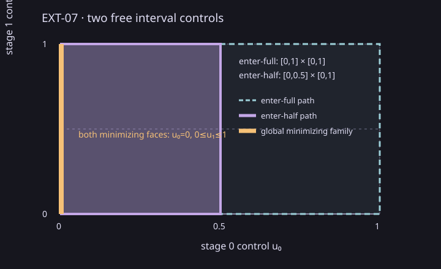

Controlled Systems Lab - EXT-07
This standalone visual example accompanies a measured two-stage scalar hybrid verification fixture.
This scalar-state, two-stage fixture uses joint coordinates (x0,u0,x_pre1,x_post1,u1,x_pre2,x_terminal), initial state x0=0, flows x_pre1=u0 and x_pre2=x_post1+0*u1, identity resets x_post1=x_pre1 and x_terminal=x_pre2, a guarded enter-half edge, a parallel universal-guard enter-full edge, and a universal-guard finish edge.
Two free controls satisfy 0 <= u0 <= 1 and 0 <= u1 <= 1. The enter-half branch adds u0 <= 0.5; enter-full leaves the unit square unchanged. Both minimize the terminal objective x_terminal = u0 at zero, so the complete global minimizing family is u0 = 0, 0 <= u1 <= 1.

Assurance is numerical binary64. The figure illustrates the exact fixture; it does not claim measured samples or validated arithmetic.
Build the versioned source commit 7d2f1ad480229bbc0e3d1596701b6b523a48ae9a in Release and run the report capture. From a clean checkout:
python scripts/reports/ext07/two_parameter_capture.py --source <source-checkout> --capture <fresh-capture> --commit 7d2f1ad480229bbc0e3d1596701b6b523a48ae9a --cmake <cmake-executable> python scripts/reports/ext07/two_parameter_collect.py --capture <fresh-capture> --source <source-checkout> --out reports/algorithm-results python scripts/reports/ext07/two_parameter_render_saved.py --bundle reports/algorithm-results/ext07-hybrid-two-parameter-00ac6fb75d7cab95 python scripts/reports/ext07/two_parameter_render_saved.py --bundle reports/algorithm-results/ext07-hybrid-two-parameter-00ac6fb75d7cab95 --check
Read the measured report, versioned record, raw per-call measurements, summary CSV, and measured C++ driver. The offline ZIP includes the report and source records.
EXT-07 - bounded two-stage scalar profile - source 7d2f1ad480229bbc0e3d1596701b6b523a48ae9a